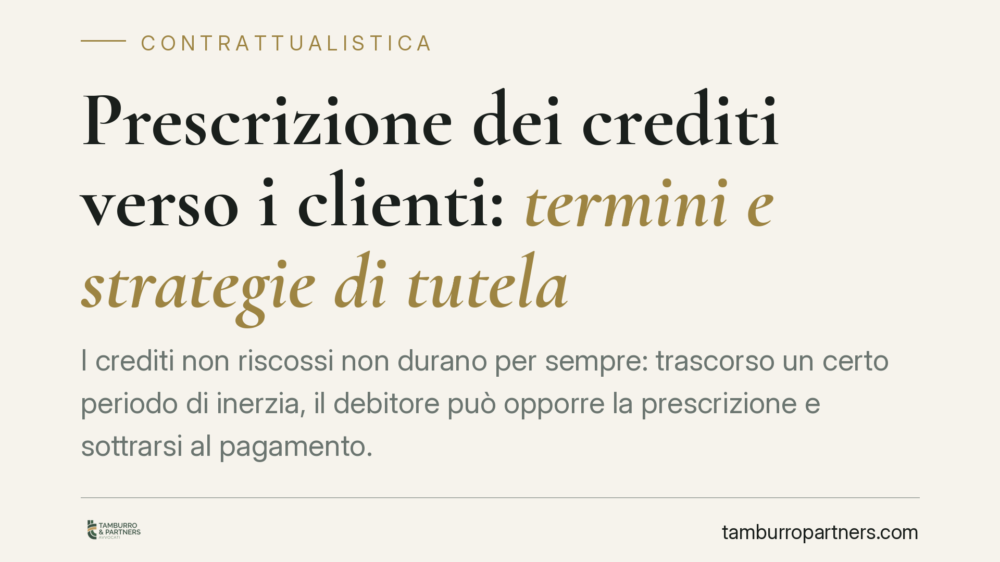

Prescrizione dei crediti verso i clienti: termini e strategie di tutela
I crediti non riscossi non durano per sempre: trascorso un certo periodo di inerzia, il debitore può opporre la prescrizione e sottrarsi al pagamento. I termini variano a seconda del tipo di rapporto e la loro interruzione richiede atti precisi. Capire come funziona il meccanismo è decisivo per non perdere somme dovute, soprattutto nei rapporti commerciali continuativi.

Prescrizione: cosa significa e come opera
La prescrizione è il meccanismo per cui un diritto si estingue quando il titolare non lo esercita per un certo periodo di tempo (art. 2934 cod. civ.). Nel caso dei crediti commerciali, significa che l'impresa o il professionista che non agisce per incassare può perdere il diritto a farlo valere in giudizio.
Un punto spesso trascurato: la prescrizione non opera d'ufficio. Il giudice non può rilevarla da solo. Deve essere il debitore a eccepirla, cioè a sollevarla espressamente in causa. Se non lo fa, il credito resta esigibile anche se i termini sono scaduti. Questo non autorizza a sottovalutare i tempi, ma inquadra correttamente la dinamica processuale.
I termini: decennale e quinquennale
La regola generale è il termine ordinario decennale (art. 2946 cod. civ.): dieci anni, salvo che la legge disponga diversamente.
Le eccezioni, però, sono frequenti e incidono molto sui rapporti con i clienti. L'art. 2948 cod. civ. prevede un termine quinquennale per tutto ciò che deve pagarsi periodicamente ad anno o in termini più brevi: canoni, forniture periodiche, somministrazioni, interessi. Per i compensi dei professionisti e di altre categorie opera inoltre il termine breve dell'art. 2951 cod. civ.
La qualificazione del rapporto conta più del nome che le parti gli attribuiscono. Un rapporto di somministrazione con consegne periodiche può ricadere nel termine quinquennale anche se le parti lo hanno denominato diversamente. La Cassazione ha più volte ribadito che rileva la struttura effettiva della prestazione, non l'etichetta contrattuale (tra le altre, Cass. sez. II, n. 1740/2019 in tema di distinzione tra obbligazioni periodiche e unitarie).
Un termine da ricordare è quello dell'art. 2953 cod. civ.: quando il credito è stato riconosciuto da una sentenza passata in giudicato, il termine di prescrizione diventa in ogni caso decennale (la cosiddetta *actio iudicati*). Anche crediti originariamente soggetti a termini brevi, una volta cristallizzati in giudicato, godono quindi dei dieci anni.
Interruzione e sospensione: due meccanismi diversi
L'interruzione azzera il termine, che ricomincia a decorrere da capo. Si realizza con la costituzione in mora del debitore, cioè con una richiesta scritta di adempimento (art. 2943 cod. civ.), oppure con l'avvio di un'azione giudiziale.
Esiste però anche un'interruzione che proviene dal debitore: il riconoscimento del debito (art. 2944 cod. civ.). Un pagamento parziale, una richiesta di rateizzazione, una email in cui il cliente ammette di dover saldare producono lo stesso effetto interruttivo. Conservare queste comunicazioni può rivelarsi decisivo.
Diversa è la sospensione (artt. 2941-2942 cod. civ.): qui il termine non riparte da zero, ma resta "congelato" per la durata della causa sospensiva (ad esempio determinati rapporti tra le parti), per poi riprendere a decorrere sommando il periodo già trascorso. La distinzione è importante: l'interruzione cancella il tempo maturato, la sospensione lo mette solo in pausa.
L'onere della prova grava sul creditore
Chi invoca l'interruzione deve dimostrarla. Non basta sostenere di aver sollecitato il pagamento: occorre provare che l'atto interruttivo è giunto al debitore.
Qui entra in gioco l'art. 1335 cod. civ.: gli atti ricettizi si presumono conosciuti quando giungono all'indirizzo del destinatario. Per questo consigliamo di privilegiare la raccomandata A/R e la PEC, strumenti che forniscono prova dell'invio e della ricezione. Una semplice email ordinaria o una telefonata lasciano il creditore senza mezzi di prova adeguati.
Implicazioni pratiche
Per un'impresa o un professionista con molti crediti aperti, la gestione dei termini non è un dettaglio formale. Un credito prescritto è un credito di fatto perso, anche se la fornitura è stata regolarmente eseguita. La differenza tra un recupero efficace e una perdita dipende spesso dalla puntualità e dalla tracciabilità degli atti interruttivi.
Cosa fare in concreto
- Mappa le scadenze: censisci i crediti aperti e associa a ciascuno il termine corretto (decennale o quinquennale), partendo dalla natura effettiva del rapporto.
- Interrompi per iscritto e in modo tracciabile: invia la messa in mora con raccomandata A/R o PEC, conservando ricevute e avvisi di consegna.
- Archivia i riconoscimenti del debitore: pagamenti parziali, richieste di dilazione e ammissioni scritte interrompono la prescrizione; conservali.
- Non attendere l'ultimo momento: programma i solleciti con congruo anticipo rispetto alla scadenza del termine.
- Valuta l'azione giudiziale quando la messa in mora non produce effetti: l'avvio della causa interrompe la prescrizione e può aprire la via all'actio iudicati decennale.
---
Contributo informativo a cura di Tamburro & Partners Avvocati - Avv. Giuseppe Tamburro. Non costituisce parere legale.
Ogni contratto ha il suo equilibrio.
Se vuoi una revisione delle clausole o una redazione su misura, scrivi allo studio. Ti rispondiamo entro un giorno lavorativo.